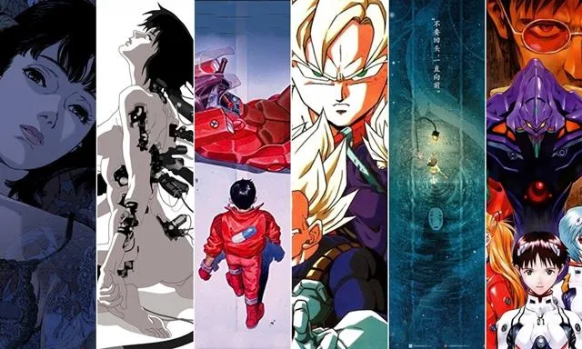

Animes clásicos
Historias que marcaron a una generación de fanáticos.

La época dorada del anime en televisión
Durante los años noventa y los primeros años del nuevo milenio, muchas personas conocieron el anime mediante canales de televisión, cintas VHS, revistas y pequeños sitios creados por fanáticos.
Historias para todos los gustos
Las producciones de aquella época combinaron acción, aventura, comedia, ciencia ficción, romance y fantasía. Muchas siguen siendo recordadas por sus personajes, canciones y mundos imaginarios.
Recomendaciones del archivo
Estas son algunas obras representativas que ayudaron a popularizar distintos géneros del anime:
- Dragon Ball Z: acción, aventura y combates memorables.
- Neon Genesis Evangelion: ciencia ficción, drama y mechas.
- Akira: una película de ciencia ficción con estética cyberpunk.
- Ghost in the Shell: tecnología, identidad y futuro digital.
Puedes consultar más información en Anime News Network .